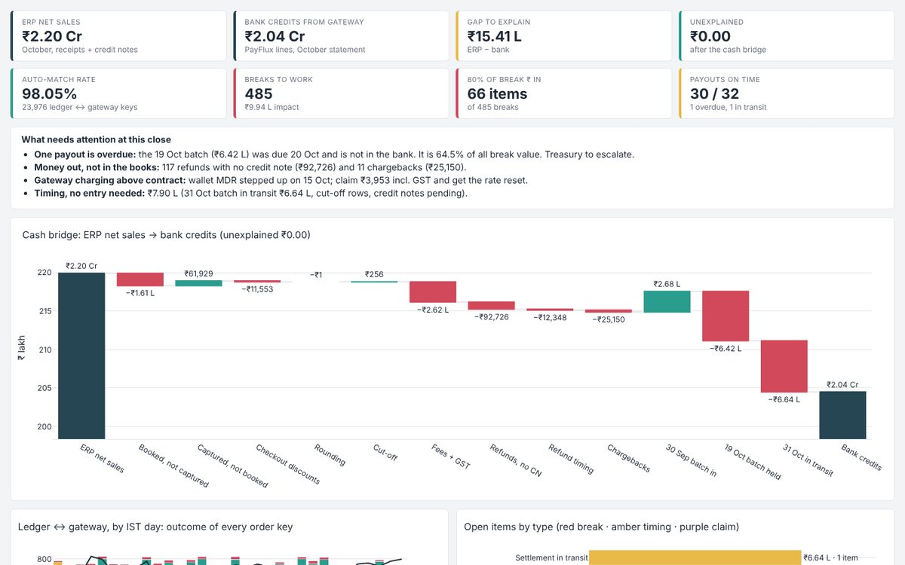
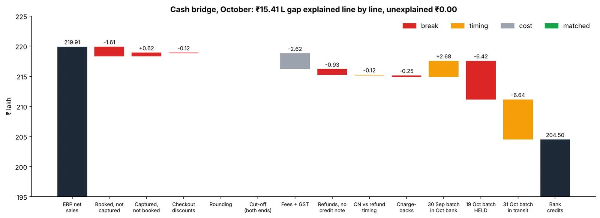
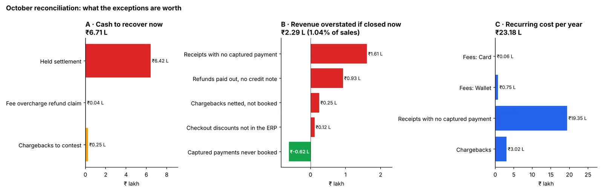
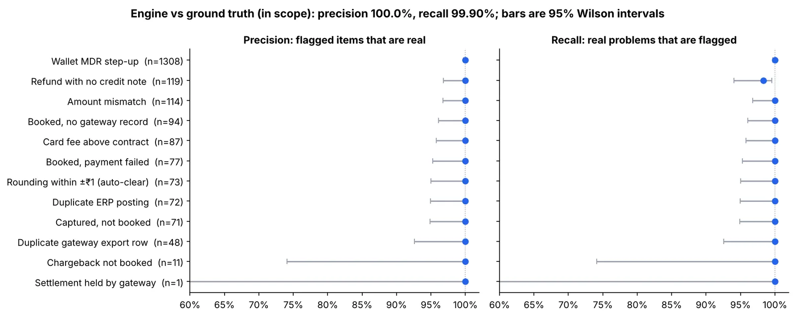
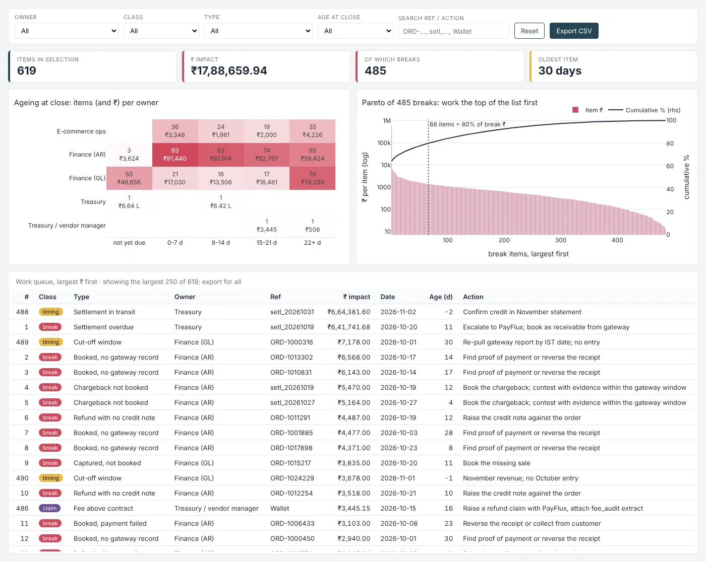

Finance · Reconciliation · SQL engine
Transaction Reconciliation Engine
A three-way month-end reconciliation (ERP ledger ↔ payment gateway ↔ bank) in DuckDB SQL that explains every rupee of a ₹15.41 L gap, validates itself against ground truth and tells finance what each exception is worth.
- ₹0.00unexplained in a ₹15.41 L gap
- 98.05%of 23,976 keys auto-matched
- 100% / 99.90%precision / recall vs ground truth
- ₹6.71 Lcash to recover this close

The problem
A mid-size Indian D2C retailer takes nearly all its revenue through a payment gateway. Every month end, finance has to prove that each sale was paid, that the gateway paid what it owed after its contracted fees, refunds and chargebacks, and that the money reached the bank. It was done by hand in Excel over ~25,000 rows, took three to four days and still ended with an unexplained difference that got written off.
The data
Four reproducible exports from a seeded generator with documented assumptions: an ERP ledger (24,261 rows, IST, three date formats, text amounts), a gateway transaction report (24,298 rows, UTC, amounts in paise, messy order refs), 32 daily payouts and the October bank statement. Twelve kinds of real reconciliation problems are injected and labelled, so the engine can be scored; the engine never reads the labels.
Approach
Logged cleaning pipeline
18 rules, each logging the rows it touched; removed rows go to a quarantine table with a reason; 19 validation checks (unique keys, GST = 18% of fee, payout arithmetic, bank balance recomputes) must pass.
EDA
A plain order-id join gets 97.7%. The rest splits into an IST/UTC cut-off artefact (112 rows), one-directional checkout discounts, fees above contract, unbooked refunds and a held payout.
SQL engine in DuckDB
A 9-rule cascade with FULL OUTER JOIN and ordered CASE, a per-transaction fee audit with LAG() to find rate changes, many-to-one payout rebuilds, a 619-item exception register with owners, and a cash bridge from ERP sales to bank credits.
Validation against ground truth
Precision and recall per exception type with Wilson intervals, error analysis that found and fixed two engine bugs, rule-sensitivity sweeps, and the frozen rules rerun on 20 newly generated months.
Dashboard
Four Power BI-style pages on six SQL marts, published only after 7 tie-out checks against the engine pass.
₹ impact and recommendations
Cash to recover, revenue misstatement tested against materiality, and annual cost at current rates with bootstrap intervals over 20 months; 8 ranked actions with owners.
What I found
- The ₹15.41 L gap between ERP net sales and bank credits is explained line by line to ₹0.00: fees, timing, a held payout, and real breaks.
- The gateway raised the wallet fee from 2.00% to 2.25% on 15 Oct with no contract change. The October claim is ₹3,953, but at the new rate it is about ₹81k a year.
- Closing without the engine would overstate October revenue by ₹2.29 L (1.04% of sales), twice a 0.5% materiality threshold, and it is material in all 20 test months.
- Nearly half the breaks (227 of 485) were over 14 days old at close. Running the same engine daily would cut value-weighted exposure by 91.7%.
| Section | Line | ₹ |
|---|---|---|
| Recover now | Settlement held by the gateway (19 Oct) | ₹6,41,741.68 |
| Recover now | Fee overcharge claim | ₹3,953.16 |
| Books wrong if closed now | Net revenue overstatement | ₹2,28,750.50 (1.04%) |
| Recurring | Fee overcharge at current rates | ≈ ₹81,299 / year |
| Recurring (at risk) | Receipts with no captured payment | ₹1,61,250 / month |
Charts




Live dashboard
Interactive: filter by segment and hover any chart. Open full screen ↗
The key insight
A clean bridge doesn't prove the classification is right, so the engine was scored against labelled ground truth: 0 false positives and 2,073 of 2,075 in-scope problems caught. Scoring found two real bugs (31 Oct refunds and a 31 Oct/1 Nov booking) that a ₹0.00 bridge had hidden. For the controller, the result is a short, owned work list: recover the held ₹6.42 L payout, post receipts from the payment-capture event, and get the wallet rate back to contract.
Limitations & next steps
- The data is synthetic, built to look like real exports with documented assumptions; the SQL runs unchanged on real files.
- Annual figures assume flat volume and no fixes, and the 20-month ranges only measure noise at fixed error rates.
- Receipts with no payment are revenue at risk; the dispatch log is needed to confirm the actual loss.